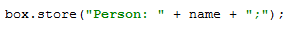
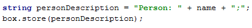

The Introduce Variable refactoring helps you simplify complicated statements in your code. For example, in the code fragment below, you can select an expression in the code:

and press &shortcut:IntroduceVariable; (Refactoring | Introduce Variable in the pop-up menu). This will result in the following:
